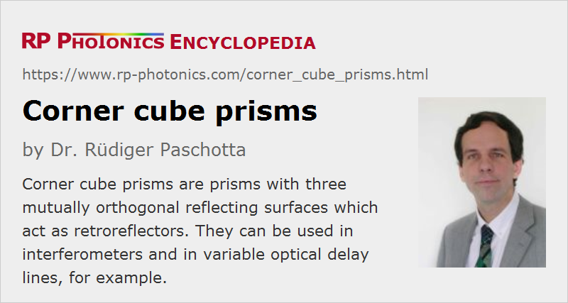

Corner Cube Prisms
Definition: prisms with three reflecting surfaces which act as retroreflectors
Alternative terms: corner cubes, retroreflecting prisms, trihedral prisms
More general term: prisms
German: Tripelprismen
How to cite the article; suggest additional literature
Author: Dr. Rüdiger Paschotta
Corner cube prisms are prisms which act as corner reflectors, a type of retroreflectors. The basic operation principle is that there are internal reflections on three mutually orthogonal prism surfaces, leading to a direction of a reflected beam which is nominally parallel to the direction of the incident beam – with the accuracy limited only by the accuracy of the surface orientation of the prism. Precision prisms can offer excellent parallelism of incoming and reflecting beams. It is usually specified as an angular deviation, e.g. < 2 arcseconds.
The operation principle is illustrated in Figure 1 for a device which works only in one plane and involves two reflections. A tilt of the prism around one axis can still modify the direction of the reflected beam. Only by using three such reflections, that can be avoided.
Typically, one utilizes total internal reflection on the mentioned three surfaces, or alternatively reflections on metalized surfaces.
Of course, the retroreflection works properly with a laser beam only when it fully hits one of the reflecting surfaces; it should not be directed into the corner.
Despite the name containing the term “cube”, corner cube prisms are generally not having the geometric form of a cube. Instead, the input/output side is oriented roughly perpendicular to the direction of incoming beams, and opposite to it there is the “corner” formed by three mutually perpendicular surfaces. The exact orientation of the input/output surface is not critical, but it is easier to have an effective anti-reflection coating when the incidence is roughly perpendicular. Usually, the input/output surface is equipped with a broadband AR coating. Imperfect operation of the coating leads to a parasitic reflected beam.
Corner cube prisms may be supplied as bare prisms, or together with holds for mounting e.g. to a surface. They are often used in the context of optical metrology, e.g. in interferometers, and in spectroscopy.
Suppliers
The RP Photonics Buyer's Guide contains 12 suppliers for corner cube prisms. Among them:
Questions and Comments from Users
Here you can submit questions and comments. As far as they get accepted by the author, they will appear above this paragraph together with the author’s answer. The author will decide on acceptance based on certain criteria. Essentially, the issue must be of sufficiently broad interest.
Please do not enter personal data here; we would otherwise delete it soon. (See also our privacy declaration.) If you wish to receive personal feedback or consultancy from the author, please contact him e.g. via e-mail.
By submitting the information, you give your consent to the potential publication of your inputs on our website according to our rules. (If you later retract your consent, we will delete those inputs.) As your inputs are first reviewed by the author, they may be published with some delay.
See also: prisms, retroreflectors
and other articles in the category general optics
|  |
If you like this page, please share the link with your friends and colleagues, e.g. via social media:
These sharing buttons are implemented in a privacy-friendly way!